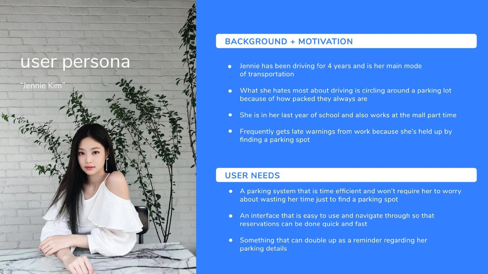
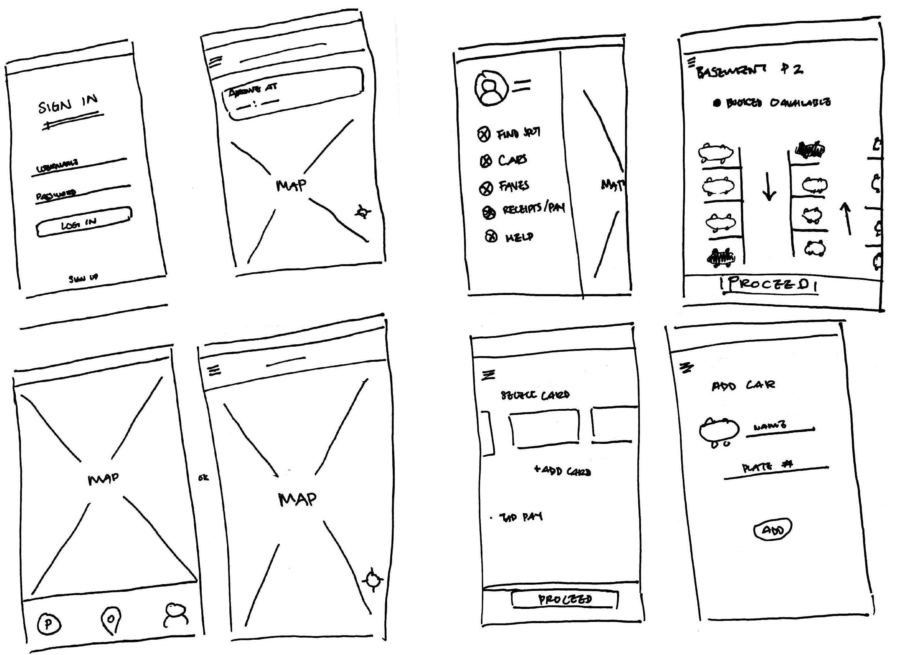

Helping drivers secure point B from point A
ParkEasy is an app aimed to assist drivers by making the end process of parking easier, by changing public parking areas into a reservation system.
Research & Insights
Upon choosing to design a project within the realm of transportation, specifically driving, we started by interviewing drivers about their experiences to understand some common issues and pinpoint areas of a potential design intervention. After identifying parking and stress as the pain points to address, we began working on the concept of reserved parking to help alleviate worry and time loss.
Wireframing & Prototyping
After understanding the goals of our app, we began wireframing our design with internal testing, followed by prototyping its usability with external testing through a high fidelity interface. Through this, we realized that we were adding too many steps in-between tasks and lacking visual affordances. This overloaded our testers with interactions, but most importantly, broke the heuristic rule of recognition over recall.

Finalized Design & Features
Reflection
What I learned from this project was the application of heuristic principles within interaction design. Throughout the design process, we followed the guideline really only forgetting to consider recognition over recall. In testing our finalized design, we saw little difficulty in completing tasks while conducting user testing. The interface itself has a simple elegance with intuitive interactions providing status feedback that matches the system with the real-world.